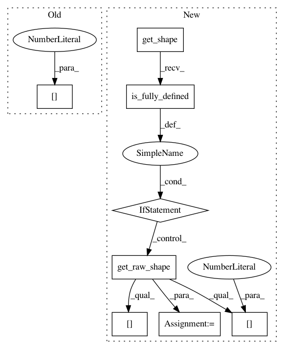

92e936b10af3f12fcbb1ad00b50b9c82b09503a7,ops.py,,tt_sparse_flat_inner,#Any#Any#,338
Before Change
// implementation
// https://github.com/tensorflow/tensorflow/issues/206
curr_core = tt_a.tt_cores[core_idx]
left_rank = tf.shape(curr_core)[0]
right_rank = tf.shape(curr_core)[-1]
curr_core = tf.transpose(curr_core, (1, 2, 0, 3))
curr_core = tf.reshape(curr_core, (-1, left_rank, right_rank))
// Ravel multiindex (row_idx[:, core_idx], col_idx[:, core_idx]) into
After Change
else:
num_elements = tf.shape(sparse_b.indices)[0]
tt_a_elements = tf.ones((num_elements, 1, 1))
if tt_a.get_shape().is_fully_defined():
a_shape = tt_a.get_raw_shape()
else:
a_shape = raw_shape(tt_matrix_a)
if tt_a.get_tt_ranks().is_fully_defined():
a_ranks = tt_a.get_tt_ranks()
else:
a_ranks = tt_ranks(tt_a)
if tt_a.is_tt_matrix():
// TODO: use t3f.shape is safer??
tensor_shape = tt_a.get_raw_shape()
row_idx_linear = tf.cast(sparse_b.indices[:, 0], tf.int64)
row_idx = utils.unravel_index(row_idx_linear, tf.cast(tensor_shape[0], tf.int64))
col_idx_linear = tf.cast(sparse_b.indices[:, 1], tf.int64)
col_idx = utils.unravel_index(col_idx_linear, tf.cast(tensor_shape[1], tf.int64))
for core_idx in range(tt_a.ndims()):
// TODO: probably a very slow way to do it, wait for a reasonable gather
// implementation
// https://github.com/tensorflow/tensorflow/issues/206
curr_core = tt_a.tt_cores[core_idx]
left_rank = a_ranks[core_idx]
right_rank = a_ranks[core_idx + 1]
curr_core = tf.transpose(curr_core, (1, 2, 0, 3))
curr_core_shape = (a_shape[0][core_idx]*a_shape[1][core_idx], left_rank,
right_rank)
// TODO: test with partually known shape (e.g. tt_ranks are undefined).
curr_core_shape = tf.TensorShape(curr_core_shape)
curr_core = tf.reshape(curr_core, curr_core_shape)
// Ravel multiindex (row_idx[:, core_idx], col_idx[:, core_idx]) into
// a linear index to use tf.gather that supports only first dimensional
// gather.
In pattern: SUPERPATTERN
Frequency: 3
Non-data size: 8
Instances
Project Name: Bihaqo/t3f
Commit Name: 92e936b10af3f12fcbb1ad00b50b9c82b09503a7
Time: 2017-02-11
Author: novikov@bayesgroup.ru
File Name: ops.py
Class Name:
Method Name: tt_sparse_flat_inner
Project Name: Bihaqo/t3f
Commit Name: 330154d9f5344f0a6ab39b3a313626c4b574dbbd
Time: 2017-02-11
Author: izmailovpavel@gmail.com
File Name: kronecker.py
Class Name:
Method Name: determinant
Project Name: Bihaqo/t3f
Commit Name: 40db92599e7607b97f5b52a4d6a90bef9612c317
Time: 2017-02-11
Author: izmailovpavel@gmail.com
File Name: kronecker.py
Class Name:
Method Name: slog_determinant